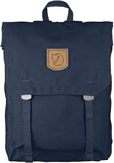
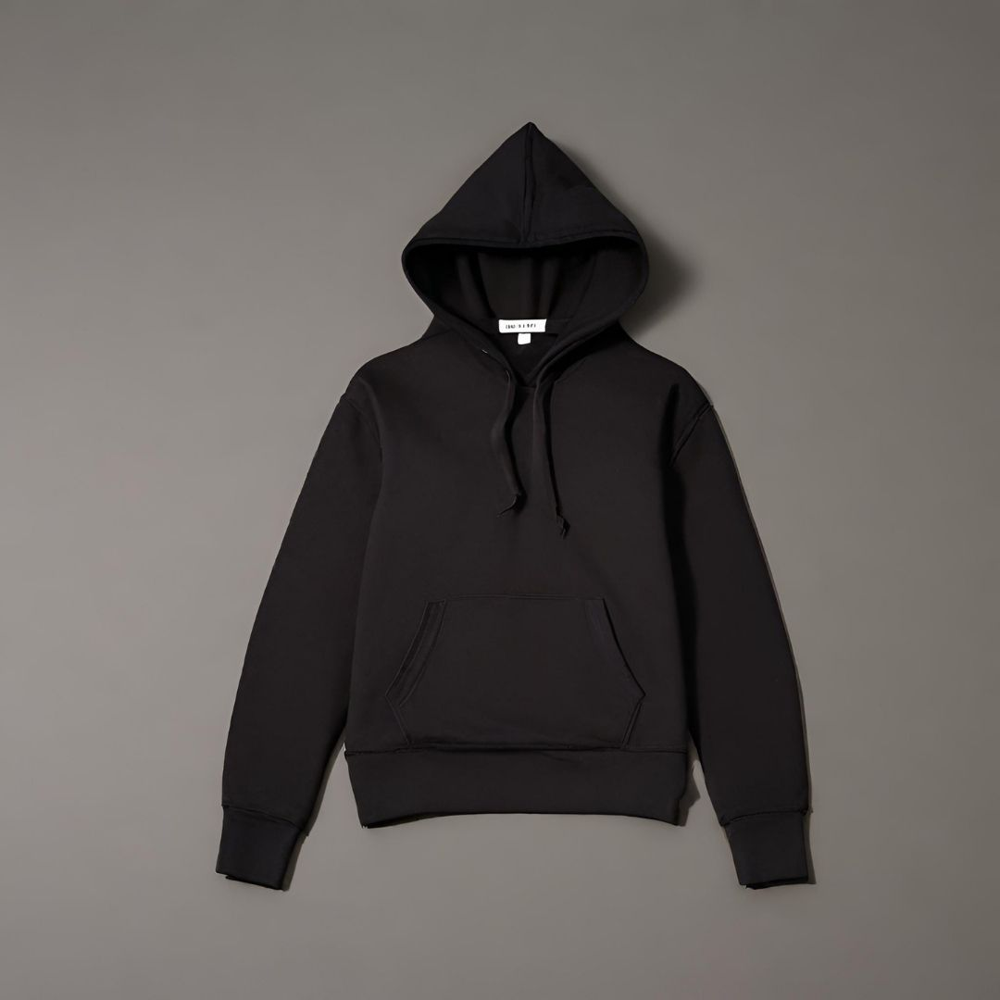

| SNO |
NAME |
IMAGE |
DESCRIPTION |
RATING |
| rate |
count |
| 1 |
bag |
 |
A bag is a lightweight, flexible container meant for carrying things. A grocery bag is one you bring home from the supermarket full of food. |
4 |
6 |
| 2 |
T-shirt |
 |
A T-shirt (also spelled tee shirt, or tee for short) is a style of fabric shirt named after the T shape of its body and sleeves. |
3 |
5 |
| 3 |
Jacket |
 |
A jacket typically has sleeves and fastens in the front or slightly on the side. A jacket is generally lighter, tighter-fitting. |
4 |
5 |
| 4 |
shirt |
 |
a long- or short-sleeved garment for the upper part of the body, usually lightweight and having a collar. |
6 |
4 |
| 5 |
bracelet |
 |
A bracelet is an article of jewellery that is worn around the wrist. Bracelets may serve different uses, such as being worn as an ornament. |
5 |
7 |